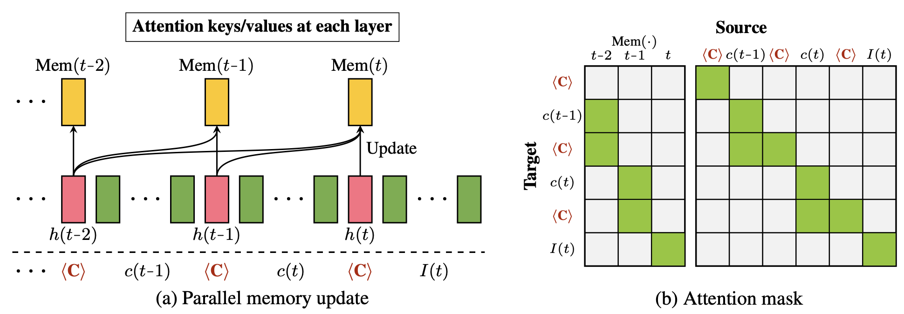
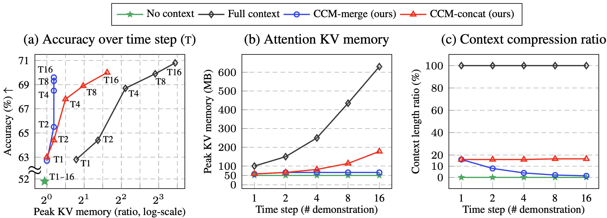
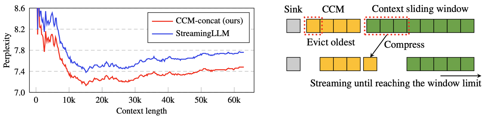
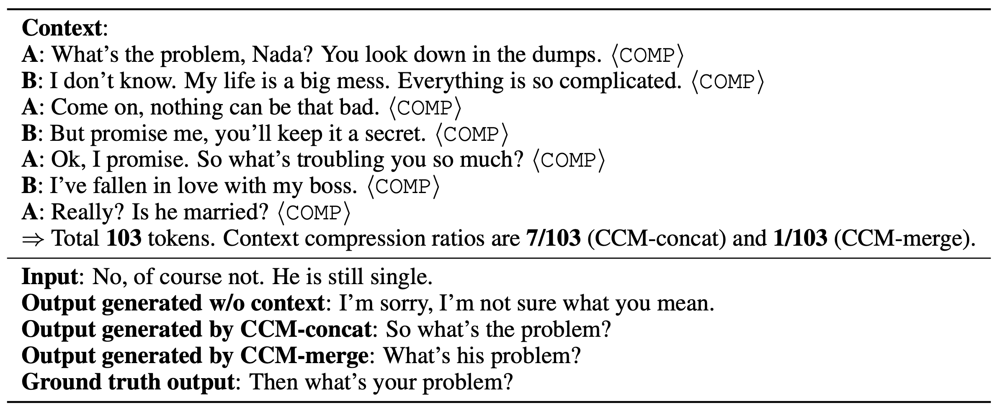
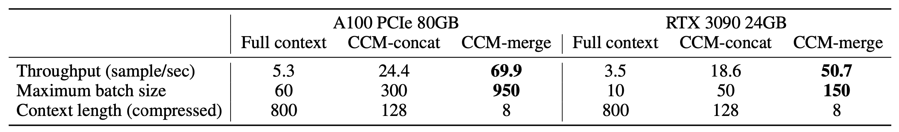

Summary
Our approach dynamically creates compressed memory of attention keys/values during LLM
interactions.
Our approach only requires training a conditional LoRA for compression .
We use a fully parallelized training strategy for recurrent compression procedures.
We conduct evaluations on diverse applications: conversation, multi-task ICL, and personalization,
achieving the performance level of a full context model with 5x smaller
context memory space.

Figure. Illustration of the proposed LM framework with compressed memory Mem(∙), where <C>
denotes
a
compression token.
Results

Figure. Comparison of our approach and the full context model with LLaMA-7B on multi-task ICL.

Figure. Streaming evaluation on PG19 validation set using sliding window with LLaMA-7B.

Table. An example sample of our approach with LLaMA-7B in DailyDialog.

Table. Inference throughput analysis of our approach with LLaMA-7B using batch processing.